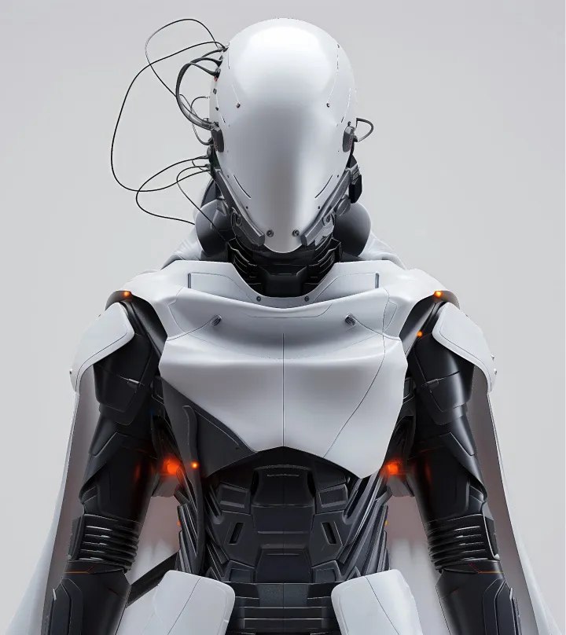
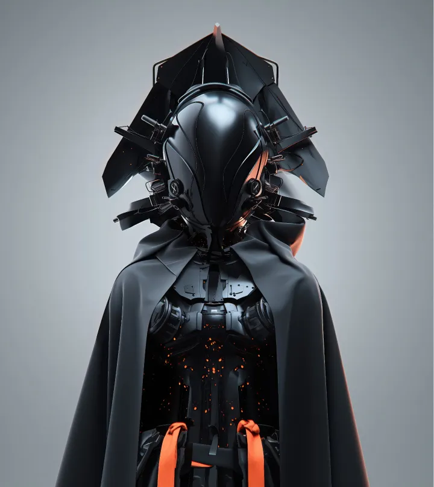
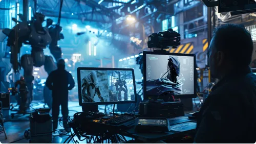
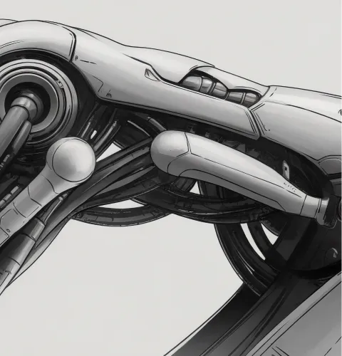
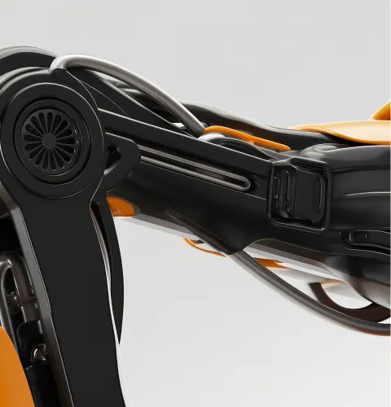
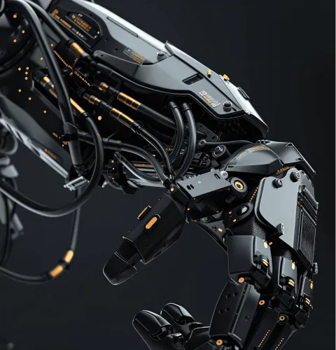
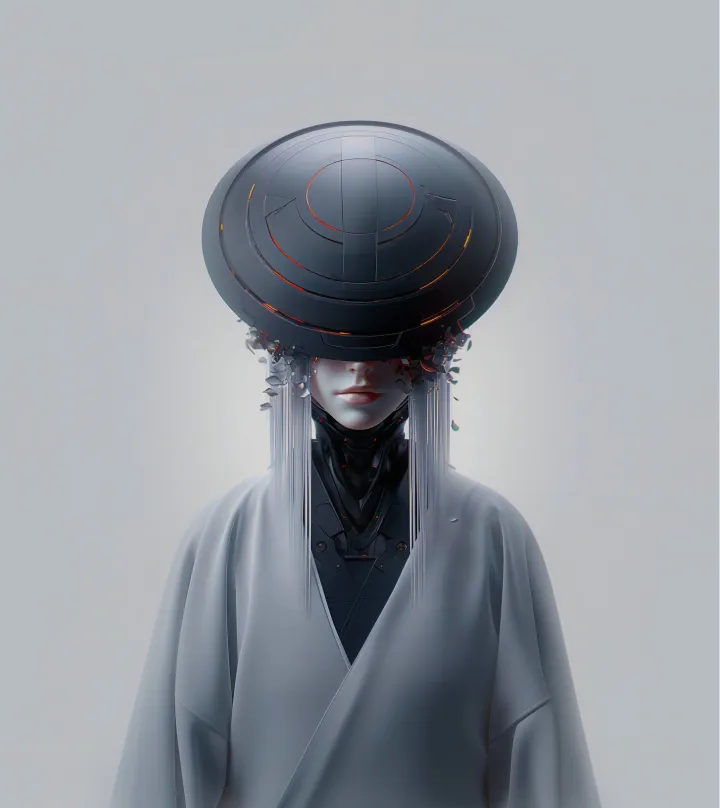
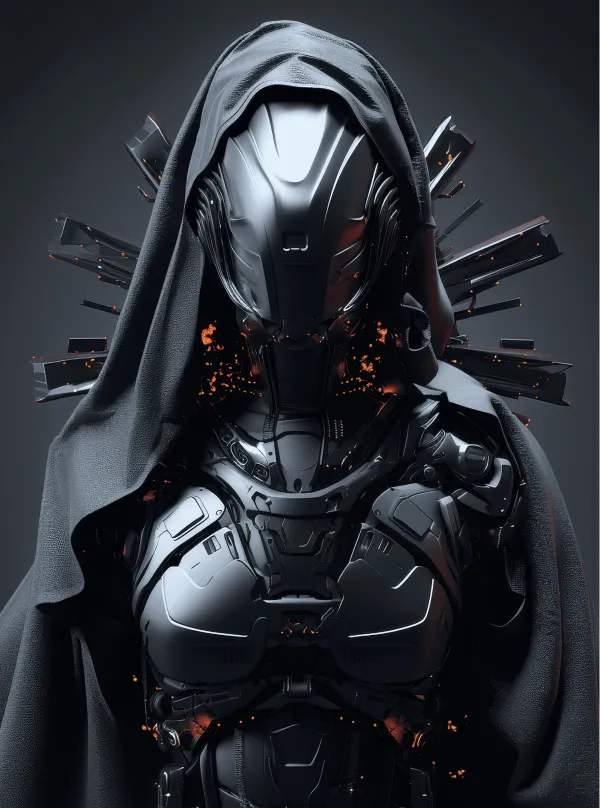
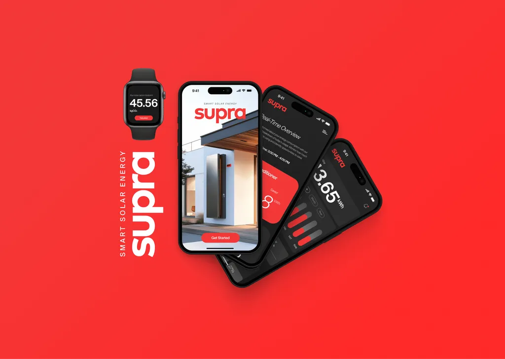

Oliver Hayes
The Photographer
A Blend of Elegance and Storytelling
— Stellar Odyssey demanded a visual landscape that could transport audiences to uncharted territories of the universe. As the lead 3D motion designer, my mission was to infuse life into the script’s visionary concepts through cutting-edge CGI and visual effects.


The project required adherence to the highest standards of visual fidelity and real-time rendering capabilities to meet the production studio's technical requirements.
Creating the motion design visuals of the involved designing a universe that was not only believable but also awe-inspiring. The objective was to develop a cohesive visual narrative that enhanced the storytelling and immersed viewers in the film's sci-fi world.
Working with Nebula Production, I embarked on a journey to create a visual spectacle that would define Stellar Odyssey. This project required a meticulous approach to design, ensuring that every element, from characters to vehicles, resonated with the film's futuristic theme. My responsibilities spanned from conceptualizing 3D characters and tools to crafting entire scenes that captured the essence of the unknown.

I adopted a multi-faceted approach that combined creativity with technical precision. The goal was to push the boundaries of 3D design while maintaining a consistent aesthetic throughout the film.
I began by developing detailed concept art and 3D models, focusing on creating unique and engaging characters that would drive the narrative forward. This phase involved iterative feedback sessions with the production team to refine each design to perfection.
The next step was to integrate these models into dynamic scenes using advanced visual effects techniques. By leveraging the latest software and tools, I was able to create realistic and stunning visuals that added depth and dimension to the film. The use of innovative rendering techniques ensured that each scene was polished and visually compelling.
My design process was a blend of creativity, technical skills, and collaboration. Each stage was meticulously planned and executed to achieve the highest quality results.
The process started with research and brainstorming to grasp the thematic and aesthetic needs of "Stellar Odyssey." I created mood boards and sketches to visualise concepts, followed by detailed 3D models and textures to ensure a cohesive look.Constant communication with the production team allowed for feedback and adjustments. Refining the designs was key to meeting the film's high standards, with visual effects seamlessly blended into the live-action for a stunning cinematic result.



My design philosophy for Stellar Odyssey aimed to create a future-proof aesthetic, balancing realism and imagination, with each element contributing to a cohesive, believable universe.
Months of hard work and collaboration resulted in a visual experience that was both groundbreaking and memorable. The designs not only met but exceeded the expectations of the production team, setting a new standard for sci-fi films.
The final designs for the film included a range of 3D characters, each with their own unique attributes and backstories, enhancing the depth of the narrative. The vehicles and tools were designed with a futuristic aesthetic that was both functional and visually striking.
The 3D scenes, brought to life with intricate details and dynamic visual effects, transported audiences to the far reaches of space. The visual continuity and attention to detail ensured that every frame contributed to the overall storytelling, making the film a visual masterpiece.


"Working on the designs was a transformative experience that allowed me to push the boundaries of 3D design and visual effects. The opportunity to collaborate with such a talented team and contribute to a project of this scale was truly rewarding"
Stellar Odyssey was a monumental project for Nebula Production, and the visual expertise brought by Mark was instrumental in realizing our vision. Their dedication and creativity were pivotal in bringing our sci-fi epic to life.
The visual impact of Stellar Odyssey garnered critical acclaim and set new benchmarks in the sci-fi genre. The innovative designs and seamless visual effects played a significant role in the film's success.
The project achieved a 53% increase in audience engagement, attributed to the captivating and immersive visual experience. Additionally, the client satisfaction rate was an impressive 99%, reflecting the success of the collaborative effort and the quality of the final product.
The film's visual excellence was recognised in various industry forums, further establishing Nebula Production as a leader in cinematic innovation.
Vision to Reality – Unveiling the Final Human Visit to Martian Lands

